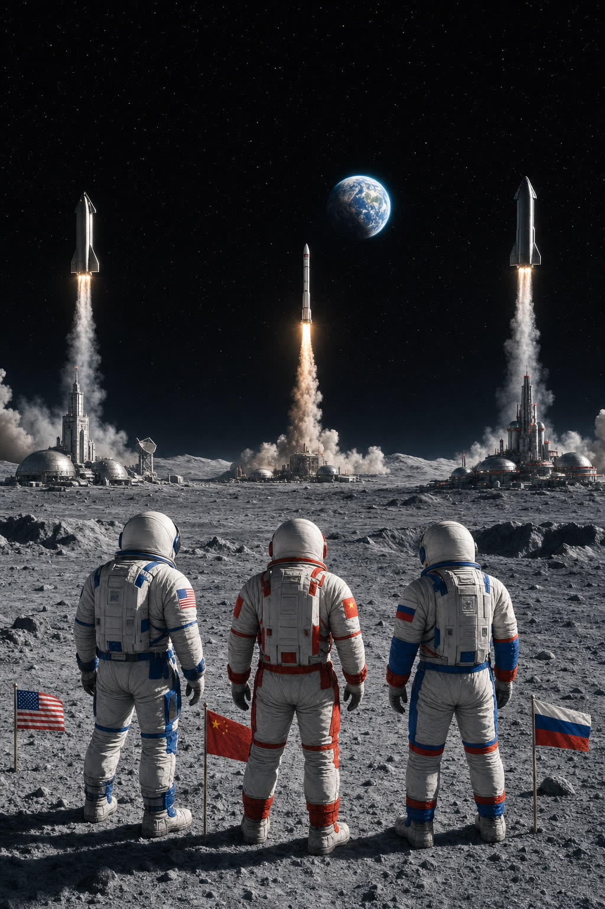
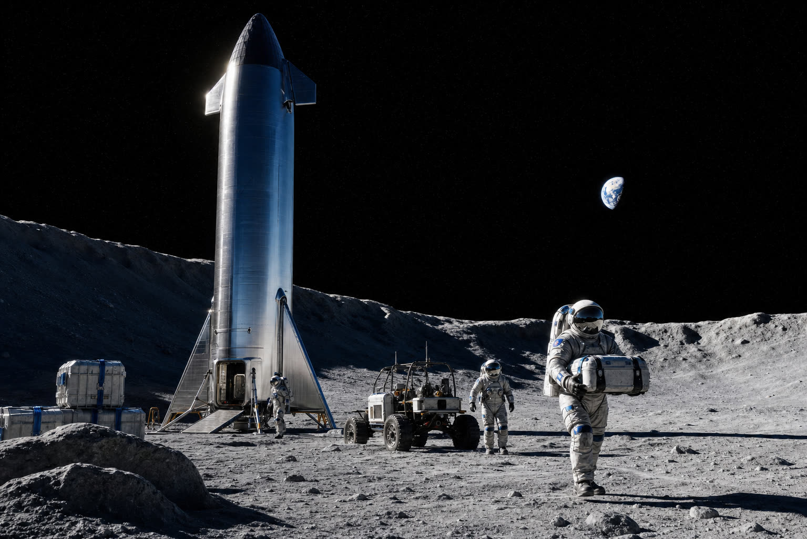
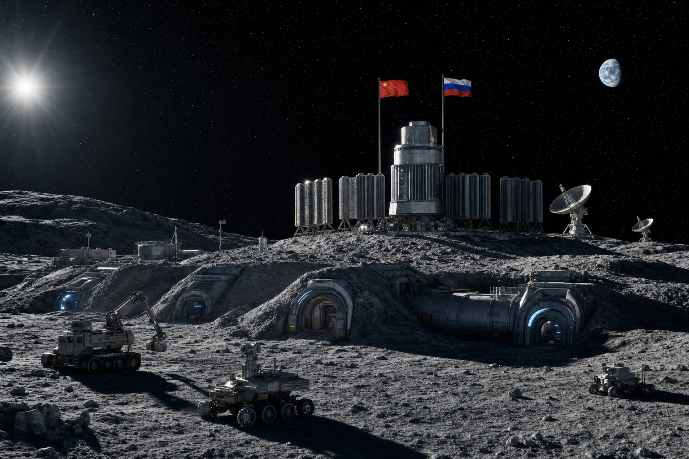
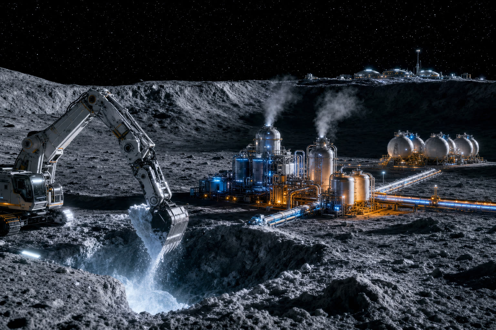
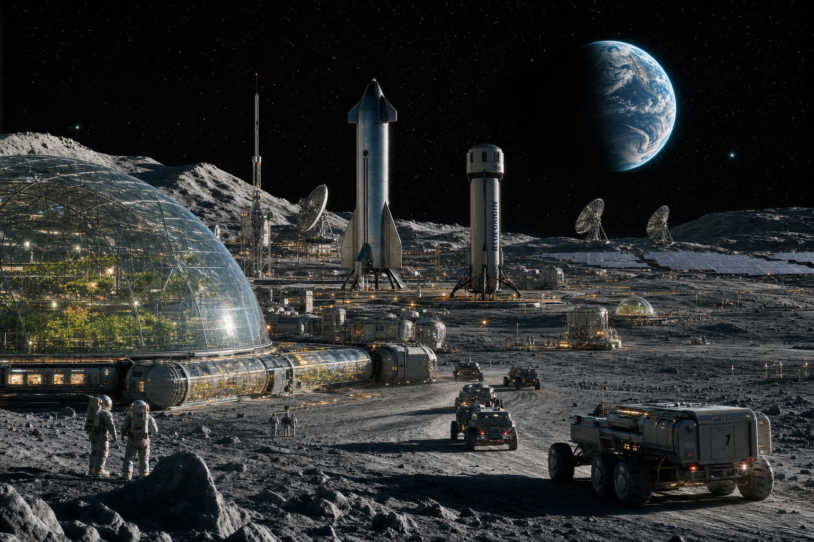

В 1972 году Юджин Сернан, последний человек на Луне, оставил в лунной пыли след ботинка и сказал: «Мы вернёмся». Пятьдесят с лишним лет спустя возврат всё ещё планируется, но уже не ради флага. К 2050 году Луна должна стать первым по-настоящему обжитым небесным телом за пределами Земли — с постоянными станциями, добычей ресурсов и собственной экономикой объёмом 250–500 млрд $.
Только вот строить эту лунную экономику будут параллельно как минимум три конкурирующие коалиции — и именно их борьба определит, кто будет в первой волне «лунных жителей», а кто опоздает на старт. Эта статья — карта реальных планов и честная оценка того, что сбудется к 2050‑му.
01 Зачем вообще возвращаться на Луну

Луна интересна сразу с четырёх сторон. Ресурсы: южный полюс хранит миллиарды тонн водяного льда в кратерах постоянной тени, а в реголите содержатся редкоземельные металлы и уникальный изотоп гелий‑3 — потенциальное топливо для термоядерной энергетики. Инфраструктура: Луна — идеальная заправка для полётов к Марсу: малая гравитация и отсутствие атмосферы делают её дешёвым трамплином. Наука: обратная сторона Луны — лучшее место для радиоастрономии (нет земных помех), а кратеры — геологический архив Солнечной системы. Стратегия: кто первым закрепится в ключевых точках полюса, тот задаёт правила игры на десятилетия вперёд.
По оценке CSIS, постройка постоянной лунной базы обойдётся в 35 млрд $, ежегодная эксплуатация — 7,35 млрд. Это меньше, чем годовой бюджет одного авианосного соединения США. Лунная экономика к 2050‑му оценивается в 250–500 млрд $ — уже сейчас она привлекает частные инвестиции.
02 США и Artemis: Starship как ключ ко всему

Программа Artemis — главный американский ответ. Сценарий следующий: Artemis III возвращает астронавтов на Луну не ранее 2028 года, посадка идёт через SpaceX Starship HLS. Далее — орбитальная станция Gateway, серия миссий Artemis IV–VII и к концу 2030‑х первая постоянная база. Маск открыто заявил о «самоподдерживающемся городе на Луне в течение десятилетия» — цифры явно оптимистичные, но направление выбрано.
Ключевой инженерный вызов — дозаправка. Чтобы Starship HLS долетел с низкой околоземной орбиты до Луны и сел, ему нужно ~1200 тонн топлива (метан + жидкий кислород). Один Starship‑танкер привозит ~150–200 тонн — значит, нужно 6–8 заправочных полётов и орбитальный топливный депот. Это никогда раньше в истории космонавтики не делалось в таких масштабах. SpaceX уже провела первые демонстрации перекачки топлива в невесомости, серьёзный тест Propellant Transfer Demo запланирован на 2026 год.
В параллель идёт ISRU — производство ресурсов на месте. NASA в 2025 году опубликовало план: к концу 2030‑х — пилотный завод по добыче кислорода из реголита (молекулярный электролиз расплавленного реголита, MRE), затем переход к водяному льду в кратерах. Если ISRU заработает, Starship сможет дозаправляться кислородом прямо на Луне — и это меняет всю экономику миссий примерно в 5–10 раз.
03 Китай и Россия: ILRS и ядерный реактор

Китайско‑российский проект International Lunar Research Station — это симметричный, но принципиально иной ответ Западу. План: до 2030 года — высадка китайских тайконавтов через ракету «Чанчжэн‑10», в 2030–2035 годах — развёртывание базовой инфраструктуры в районе южного полюса, к 2035 году — ввод первого этапа ILRS, к 2045‑му — расширенная постоянная база с ядерной энергетикой.
Ключевой элемент — компактный ядерный реактор мощностью ~100 кВт. Россия в 2025 году подтвердила: «Росатом» совместно с CNSA ведёт разработку реактора для лунной поверхности; цель ввода — 2035–2036 годы. Это решает главную проблему любой базы: ночь на Луне длится 14 земных суток, и солнечных батарей категорически не хватает. Реактор — основа всего: жизнеобеспечение, связь, ISRU, обогрев, электролиз воды.
К ILRS присоединились или подписали меморандумы 17 государств, включая Беларусь, Венесуэлу, Пакистан, ЮАР, Никарагуа. Это уже не двусторонний проект, а альтернативная коалиция, конкурирующая с американской Artemis Accords (50+ стран). Луна 2050‑го — это не единое международное сообщество, а как минимум два геополитических лагеря.
Договор о космосе 1967 года запрещает размещение на Луне ядерного оружия и военных баз — но он ничего не говорит про двойное назначение. US Space Command в 2025‑м официально включил окололунное пространство в зону своих интересов. Китай и Россия обсуждают «зоны безопасности» вокруг ILRS, куда вход «не‑партнёрам» ограничен. Лунные базы — это и есть военная инфраструктура двойного назначения, пусть и под научной вывеской.
04 Что добывать: вода, кислород и легендарный гелий‑3

Реальная лунная экономика 2040‑х строится вокруг трёх продуктов. Кислород — 42 % по массе любого лунного реголита. Технология MRE (электролиз расплавленного реголита) уже отрабатывается в CES 2026 Blue Origin показала прототип. Вода — ключ к жизнеобеспечению и ракетному топливу. По оценкам, только в южных кратерах содержится около 600 млн тонн льда. Миссия NASA PRIME‑1 уже бурит реголит, китайская «Чанъэ‑7» в 2026‑м должна подтвердить запасы.
А вот гелий‑3 — любимая тема журналистов — куда сложнее. Изотоп действительно есть в реголите (накапливался миллиарды лет от солнечного ветра), его оценочные запасы — около 1 млн тонн. Стартап Interlune обещает продавать гелий‑3 по ~10 000 $ за грамм (общий рынок — 300 млн $ в год к 2030‑м). Но для термоядерной энергетики гелий‑3 ещё бесполезен: реакторы D‑He3 — это физика конца XXI века, не 2050‑го. До тех пор гелий‑3 — это нишевый продукт для медицины (МРТ) и квантовых компьютеров, а не энергетическая революция.
05 Что общего у всех планов: пять параллелей
- Все идут на южный полюс. И NASA, и ILRS, и Blue Origin, и ESA выбирают одну и ту же узкую полоску кратеров около полюса — там лёд, постоянное солнце на пиках, прямая связь с Землёй. К 2040‑м это будет самый «густо населённый» квадрат во всей Солнечной системе — и арена для трений из‑за участков.
- Ядерная энергия неизбежна. Без реактора лунная база нежизнеспособна. И NASA, и Китай с Россией, и Blue Origin независимо двинулись в сторону компактных реакторов — принципиальная развилка пройдена.
- Робототехника опережает людей. Tesla Optimus, китайские гуманоиды, японские манипуляторы JAXA — к 2030‑м основной труд на Луне будут выполнять роботы. Маск открыто обсуждает «лунные фабрики Optimus». Человеческое присутствие останется ограниченным — первые постоянные экипажи это 4–12 человек, а не тысячи.
- Космос идёт за частными деньгами. SpaceX, Blue Origin, Interlune, Astrobotic, ispace — первая волна лунной экономики держится на контрактах NASA с частниками (CLPS, HLS, Artemis Accords). Прежний «государственный» космос NASA образца Apollo больше не вернётся.
- Срок «2050» — это про инфраструктуру, не про переселение. К 2050 году на Луне будут постоянные базы, добыча, маршруты — но не «колонии переселенцев». Жить там будут научные и технические экипажи на ротации, а не семьи. Город Маска — это история следующего поколения, после 2070‑го.
06 Что реально к 2050‑му, а что фантазия

Если разложить публичные планы по шкале «правда — оптимизм — фантазия», картина к 2050‑му году выглядит так. Это будет реально: постоянная американская база Artemis в районе южного полюса (10–30 человек на ротации), вторая — китайско‑российская ILRS, ядерные реакторы у обеих, производство кислорода и воды на месте, регулярные грузовые рейсы Starship и Long March, лунная связь и навигация, частный туризм для очень богатых (билет — от 50 млн до 250 млн $).
Это будет частично реально: промышленная добыча льда (только пилотные мощности), 3D‑печать структур из реголита (первые прототипы к 2035‑му), сельское хозяйство в закрытых модулях (эксперименты, не промышленность), термоядерный гелий‑3 (топливо ещё не понадобится, но добыча для медицины и квантовых вычислений идёт).
А вот это — ещё фантазия: города на тысячи жителей, лунный лифт, массовый туризм, рождение детей в лунной гравитации (медицинские риски не изучены), термоядерная энергетика на He‑3, независимая от Земли лунная экономика. Всё это, скорее всего, история второй половины XXI века — 2070‑х и дальше.
Будем ли мы жить на Луне к 2050‑му? Да — но не в смысле «переезжать туда». Несколько сотен людей будут постоянно работать на Луне в режиме ротации, как сегодня — на арктических станциях или МКС. Лунная база — это не дом для человечества, а промышленная платформа и трамплин к Марсу. И именно к 2050‑му решится, кто этой платформой будет управлять.
На NovaSphere мы продолжим следить за лунной гонкой — от следующего запуска Starship и демонстрации орбитальной заправки до ввода первого ядерного реактора и первой пробы лунного льда. Подписывайтесь на обновления, чтобы не пропустить ключевые точки этого 25‑летнего сюжета.